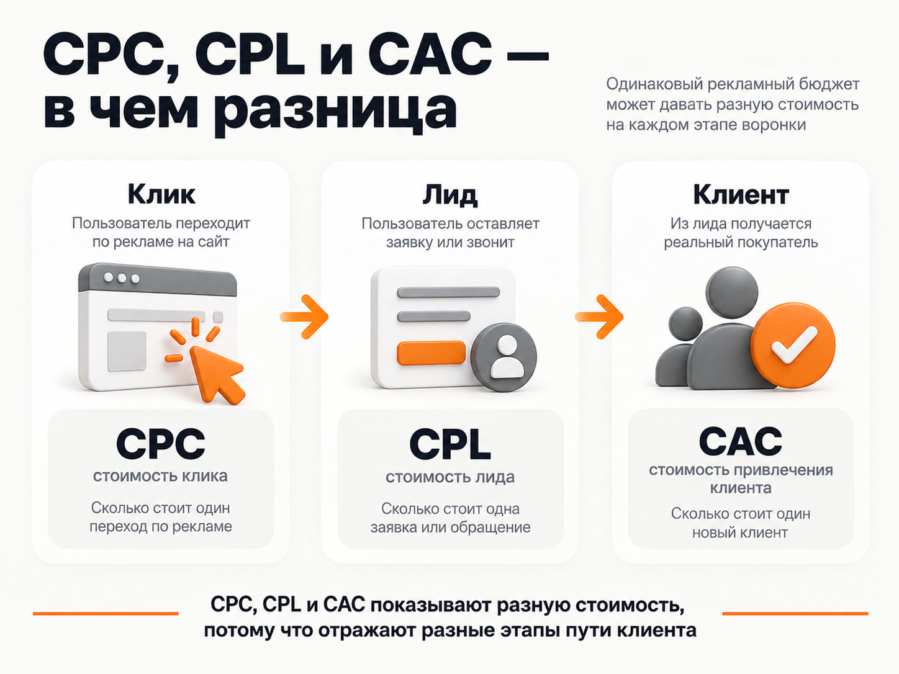
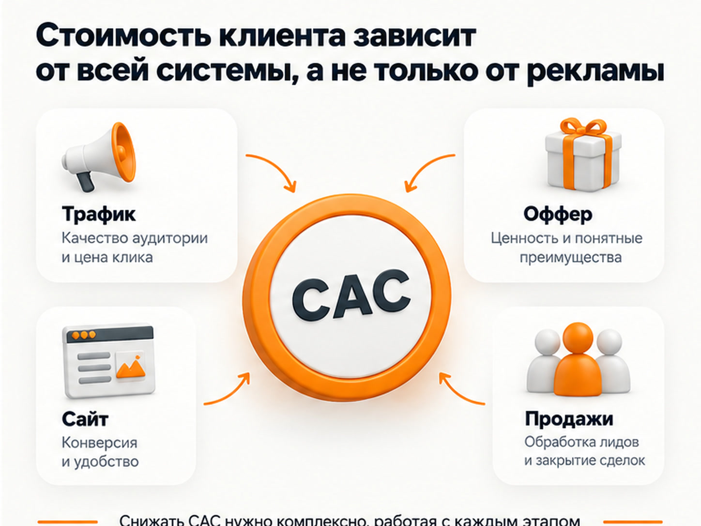
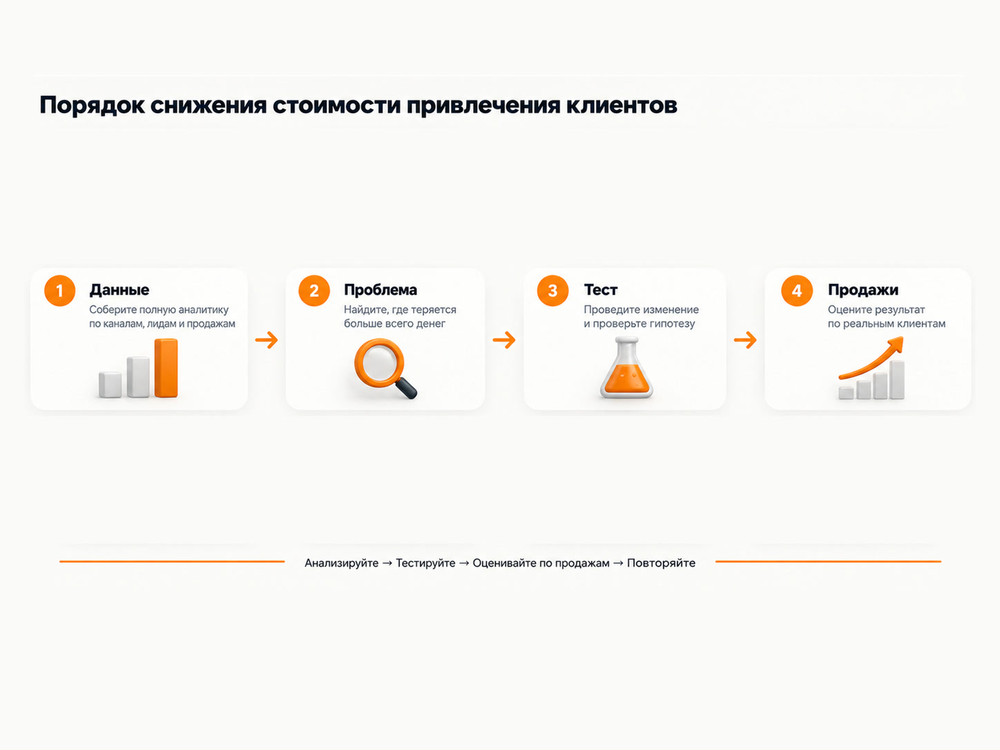

Блог о платном трафике
Стоимость привлечения клиента (CAC): как рассчитать и снизить
Стоимость привлечения клиента, или CAC, показывает, сколько бизнес в среднем тратит, чтобы получить одного нового покупателя. В отличие от стоимости клика или заявки, эта метрика находится почти в самом конце воронки: деньги потрачены, лид получен, менеджер его обработал и только после продажи появился клиент.
Базовая формула выглядит просто:
CAC = расходы на привлечение / количество новых клиентов
Например, если за месяц на привлечение потратили 300 000 рублей и получили 30 новых клиентов:
CAC = 300 000 / 30 = 10 000 рублей.
Но сам расчет обычно проще, чем последующая работа с этой цифрой. Главный вопрос предпринимателя - почему клиент обходится именно столько и что изменить, чтобы снизить стоимость его привлечения.
Что такое CAC в маркетинге
CAC расшифровывается как Customer Acquisition Cost - стоимость привлечения клиента.
Яндекс определяет CAC как показатель затрат бизнеса на получение одного нового клиента и рекомендует анализировать его не только в целом, но и по отдельным каналам продвижения. В расширенный расчет могут входить расходы на рекламу, сотрудников, подрядчиков, CRM, аналитику и другие затраты, связанные с привлечением покупателей.
Для бизнеса CAC полезен прежде всего потому, что связывает маркетинг с реальными продажами.
Можно получать дешевые клики. Можно получать дешевые заявки. Но если из ста лидов покупают два человека, итоговая стоимость клиента может оказаться совершенно неприемлемой.
Поэтому я бы смотрел на цепочку целиком:
рекламный расход -> посетитель -> лид -> квалифицированный лид -> продажа -> новый клиент
Проблема с CAC может находиться на любом из этих этапов.
Как рассчитать стоимость привлечения клиента
Есть два полезных варианта расчета.
Простой CAC
Для оперативной оценки рекламы можно считать:
CAC = рекламные расходы / количество новых клиентов из рекламы
Допустим:
- на Яндекс Директ потрачено 150 000 рублей;
- получено 60 заявок;
- 15 человек стали клиентами.
Стоимость заявки составила 2 500 рублей, а стоимость клиента:
150 000 / 15 = 10 000 рублей.
Именно здесь хорошо видно отличие CAC от стоимости лида. Реклама вроде бы дает заявки по приемлемой цене, но итоговая экономика сильно зависит от того, какая доля этих заявок превращается в продажи.
Полный CAC
Для оценки экономики бизнеса лучше учитывать больше расходов:
CAC = все затраты на маркетинг и продажи / количество новых клиентов
В расходы могут входить:
- рекламные бюджеты;
- оплата маркетолога или агентства;
- работа дизайнеров и других подрядчиков;
- зарплаты и бонусы отдела продаж;
- CRM;
- коллтрекинг;
- телефония;
- аналитические сервисы;
- другие затраты, непосредственно связанные с привлечением клиентов.
Такой расчет дает более честную картину, но есть важное правило: нельзя сегодня считать CAC только по рекламному бюджету, а через месяц сравнивать его с показателем, куда уже включены зарплаты и сервисы.
Сначала определите методику и дальше используйте ее одинаково.
CAC, CPL и CPA - в чем разница
Эти показатели часто смешивают.
CPC - стоимость перехода по рекламе. CPL - стоимость полученного лида. CPA - стоимость заданного целевого действия. CAC - стоимость привлечения нового клиента.
В Яндекс Директе CPA может показывать цену заявки, звонка, заказа или другого выбранного действия. Это еще не обязательно новый клиент.
Например:
100 000 рублей рекламного бюджета -> 50 заявок -> 10 продаж.
Тогда:
CPL = 2 000 рублей
CAC = 10 000 рублей
Поэтому оптимизация рекламы только по цене заявки иногда приводит к неправильным решениям. Дешевый источник лидов может приводить много слабых обращений и в итоге давать более дорогого клиента.
CPA в Яндекс Директе: что это и как считать стоимость конверсии

Какой CAC считается хорошим
Универсальной нормальной стоимости клиента не существует. Сравнивать свой CAC со средней цифрой из чужой статьи практически бессмысленно.
У компании, продающей недорогую услугу один раз, допустимый CAC будет одним. У B2B-компании с крупными контрактами и многолетней работой с клиентом - совершенно другим.
Смотреть нужно как минимум на:
- маржинальность продажи;
- среднюю прибыль от клиента;
- повторные покупки;
- LTV;
- срок окупаемости привлечения;
- долю новых клиентов, которые покупают повторно.
Я бы особенно осторожно относился к сравнению CAC со средним чеком. Выручка еще не является прибылью.
Если клиент заплатил компании 30 000 рублей, это совсем не означает, что она может позволить себе потратить на его привлечение 25 000.
Для бизнеса с повторными продажами полезнее смотреть связку LTV и CAC. Для бизнеса, где клиент покупает один раз, особенно важна экономика первой сделки.
Почему стоимость привлечения клиента становится высокой
CAC редко растет только из-за одной причины.
Например, предприниматель видит:
«Клиент стоит 20 000 рублей. Значит, реклама слишком дорогая».
Но внутри может оказаться совсем другая картина:
- трафик нормальный;
- заявки стоят приемлемо;
- половина заявок не обрабатывается вовремя;
- часть менеджеров плохо продает;
- в CRM теряются повторные контакты;
- сайт приводит слишком широкую аудиторию;
- предложение проигрывает конкурентам.
Поэтому высокая стоимость привлечения - это задача всей воронки, а не только рекламного кабинета.

Как снизить стоимость привлечения клиентов
Если CAC слишком высокий, я бы не начинал с требования «сделайте клики дешевле». Сначала нужно определить участок воронки, где теряется больше всего денег.
1. Считайте CAC отдельно по каждому каналу
Общий средний показатель может скрывать проблему.
Предположим:
- Яндекс Директ приводит клиента за 8 000 рублей;
- Авито - за 12 000;
- другой источник - за 35 000.
Если сложить все расходы и продажи, средняя цифра может выглядеть терпимо. Но один канал при этом будет регулярно съедать прибыль.
Яндекс также рекомендует сегментировать стоимость привлечения по каналам и при необходимости по аудиториям, продуктам и географии.
Я бы дополнительно смотрел внутри самих каналов.
Например, в Яндекс Директе отдельно:
- Поиск;
- РСЯ;
- Мастер кампаний;
- товарные кампании;
- ретаргетинг;
- отдельные направления бизнеса.
В зависимости от проекта разница между ними может быть очень большой.
Сквозная аналитика Яндекс Директ: как связать рекламу с заявками и продажами
2. Оптимизируйте Яндекс Директ не по лидам вообще, а по продажам
Одна из самых распространенных проблем - реклама оптимизируется под слишком простую цель.
Алгоритм получает сигнал «форма отправлена» и пытается находить больше людей, которые отправляют форму. Но бизнесу нужны не формы, а покупатели.
Если есть CRM и достаточный объем данных, полезно связывать рекламные кампании с дальнейшими этапами:
- квалифицированный лид;
- подтвержденный заказ;
- оплаченный заказ;
- сделка.
Это позволяет увидеть кампании, которые дают дешевые обращения, но почти не дают денег.
Дополнительно нужно проверять:
- реальные поисковые запросы;
- аудитории;
- площадки РСЯ;
- географию;
- рекламные объявления;
- посадочные страницы;
- цели;
- распределение бюджета;
- качество заявок.
Аудит Яндекс Директ: что проверить и как найти проблемы в рекламе
3. Не держитесь за один источник трафика
Если канал несколько месяцев работает на пределе возможностей, бесконечная оптимизация может ничего не дать.
Тогда имеет смысл тестировать другие источники:
- Яндекс Директ;
- SEO;
- Telegram Ads;
- VK Рекламу;
- Авито;
- Яндекс Карты;
- партнерские размещения;
- контент;
- другие подходящие бизнесу площадки.
Это не означает, что нужно одновременно запустить рекламу везде.
Каждый новый канал лучше рассматривать как отдельную гипотезу: выделить бюджет, определить критерий успеха, получить достаточный объем данных и только затем сравнивать его с текущими источниками.
Некоторые каналы хорошо работают в одной нише и почти бесполезны в другой.
Какая реклама самая эффективная для бизнеса
4. Меняйте оффер
Иногда рекламная кампания настроена нормально, но предложение само по себе слишком слабое.
Человек видит несколько похожих компаний и не понимает, почему должен обратиться именно к вам.
Для тестирования можно менять:
- состав услуги;
- способ оплаты;
- первый шаг;
- бонус;
- гарантийные условия;
- комплектацию;
- сроки;
- формат консультации;
- аргументы в пользу компании.
Я не люблю бессмысленное создание десятков офферов ради самого теста. Гипотеза должна отвечать на конкретный вопрос: что сейчас мешает человеку выбрать компанию?
Если проблема в цене, один тест. Если в недоверии - другой. Если клиент не понимает услугу - третий.
5. Тестируйте посадочные страницы
При одинаковой цене трафика два сайта могут давать совершенно разную стоимость клиента.
Если из 100 посетителей первого сайта заявку оставляют 2 человека, а второго - 5, второй бизнес уже получает намного больше возможностей для продажи при том же объеме рекламы.
Поэтому нужно проверять:
- первый экран;
- понятность предложения;
- соответствие страницы рекламному запросу;
- структуру;
- мобильную версию;
- формы;
- способы связи;
- кейсы;
- отзывы;
- цены или объяснение принципа ценообразования;
- ответы на основные возражения.
Я бы не пытался улучшать сайт абстрактно. Нужно смотреть реальные данные: где люди уходят, какие страницы хуже конвертируются, на каких устройствах возникает проблема.
Примеры продающих сайтов: оффер, доверие и конверсия
6. Меняйте саму воронку
Не всегда схема «реклама -> лендинг -> заявка -> звонок менеджера» является лучшей.
Для разных продуктов могут работать:
- квиз;
- бесплатная консультация;
- расчет стоимости;
- демоверсия;
- запись на встречу;
- вебинар;
- лид-магнит;
- подписка;
- пробный продукт;
- сразу покупка без общения с менеджером.
Особенно это заметно в сложных и дорогих продуктах. Иногда человек еще не готов оставить обычную заявку «купить», но готов сделать более простой первый шаг.
Изменение воронки способно заметно изменить CAC даже без изменения рекламного канала.
7. Разберите конверсию из лида в продажу
Вот здесь часто находится большая часть проблемы.
Представим две компании. Обе получают лиды по 2 000 рублей.
Первая продает каждому пятому:
CAC = 10 000 рублей.
Вторая продает каждому десятому:
CAC = 20 000 рублей.
Рекламный результат одинаковый. Стоимость клиента отличается в два раза.
Нужно смотреть:
- как быстро менеджеры отвечают;
- сколько попыток контакта делают;
- что происходит с пропущенными звонками;
- как квалифицируются обращения;
- какие причины отказа фиксируются;
- возвращаются ли к клиенту позже;
- насколько менеджер понимает продукт;
- есть ли контроль качества разговоров.
Поэтому фраза «реклама дает дорогих клиентов» без анализа отдела продаж почти ничего не говорит.
8. Работайте с некупившими лидами
Большая ошибка - считать лид потерянным после одного разговора.
Человек мог:
- отложить покупку;
- сравнивать несколько компаний;
- ждать деньги;
- согласовывать решение;
- вернуться к вопросу через месяц;
- выбрать другой продукт позже.
Для таких контактов нужна нормальная работа в CRM:
- статусы;
- задачи;
- повторные касания;
- сегментация;
- рассылки;
- полезный контент;
- специальные предложения там, где они уместны.
Если вы уже заплатили за привлечение лида, логично использовать этот контакт аккуратно, а не каждый раз покупать нового человека с нуля.
9. Развивайте CRM-маркетинг и повторные продажи
Работа с существующими клиентами особенно важна для бизнеса, где возможны повторные покупки.
Например:
- обслуживание;
- продление услуги;
- расходные товары;
- дополнительная услуга;
- более дорогой тариф;
- сезонное предложение;
- сопутствующий продукт.
Здесь есть нюанс. Повторная продажа сама по себе не уменьшает исторический CAC этого клиента: стоимость его первоначального привлечения уже произошла.
Зато она увеличивает LTV и делает первоначальный CAC экономически более приемлемым.
Кроме того, существующие клиенты могут приводить новых покупателей через рекомендации. Если такой канал выстроен системно и его стоимость учитывается отдельно, он действительно способен снижать среднюю стоимость нового клиента.
10. Не забывайте про рекомендации
Для некоторых бизнесов рекомендации могут быть полноценным каналом привлечения.
Работать здесь можно не только через формальную реферальную программу. Иногда достаточно:
- хорошо напоминать о себе;
- просить отзыв после успешной работы;
- оставаться на связи;
- давать клиенту удобный способ порекомендовать компанию;
- поддерживать качество сервиса.
Главная ошибка - считать рекомендации полностью бесплатными. Если есть бонусы, скидки, подарки или другие затраты, их тоже нужно учитывать.
11. Улучшайте качество данных
Невозможно нормально снижать CAC, если неизвестно, какой источник реально дал клиента.
Минимально бизнесу желательно связать:
реклама -> сайт -> обращение -> CRM -> продажа
Для звонков нужен коллтрекинг или другой способ корректного учета источника. Для длинных сделок особенно важна CRM, потому что покупка может произойти намного позже первого рекламного перехода.
Коллтрекинг для Яндекс Директа: как отслеживать звонки из рекламы
Сквозная аналитика Яндекс Директ: как связать рекламу с заявками и продажами
12. Учитывайте длинный цикл сделки
Это особенно важно в B2B, недвижимости, сложных услугах и дорогих товарах.
Если реклама была запущена в одном месяце, а значительная часть клиентов покупает через два или три месяца, расчет CAC внутри одного календарного месяца будет искажен.
Яндекс отдельно рекомендует учитывать задержку между рекламным контактом и продажей и сравнивать сопоставимые периоды.
В таких проектах я бы смотрел не только месячные отчеты, но и когорты клиентов по дате первого обращения.
13. Проводите тесты последовательно
Если одновременно поменять:
- рекламную кампанию;
- сайт;
- цены;
- оффер;
- форму заявки;
- работу отдела продаж,
то после изменения CAC будет сложно понять, что именно сработало.
Лучше сформулировать гипотезу, определить показатель и провести контролируемое изменение.
Например:
«Предполагаем, что часть клиентов не оставляет заявку из-за отсутствия понятной цены. Добавляем диапазон стоимости и смотрим изменение конверсии и качества обращений».
Так оптимизация превращается из случайных изменений в нормальную систему работы.
Как предпринимателю снизить стоимость привлечения клиентов: порядок действий
Если CAC уже кажется высоким, я бы действовал в таком порядке.
- Проверить расчет. Убедиться, что считаются именно новые клиенты, а расходы и продажи относятся к сопоставимому периоду.
- Разделить CAC по каналам. Найти источники, которые делают среднюю стоимость клиента дорогой.
- Разложить воронку. Посчитать переходы, лиды, квалифицированные обращения и продажи.
- Найти самое слабое место. Нет смысла переделывать рекламу, если 70% нормальных заявок теряет отдел продаж.
- Сформировать гипотезу. Канал, аудитория, оффер, посадочная страница, воронка или продажи.
- Провести тест. Не менять одновременно все подряд.
- Сравнить результат по продажам. Не останавливаться на CTR, кликах или CPL.
И потом повторять этот цикл.
Именно поэтому снижение стоимости привлечения клиента обычно не сводится к одной настройке рекламного кабинета.

Частые ошибки при расчете CAC
Считать все продажи, а не только новых клиентов
CAC относится к привлечению нового клиента.
Если в выбранном месяце часть заказов сделали постоянные покупатели, включать их в знаменатель нельзя. Иначе стоимость привлечения искусственно уменьшится.
Считать только рекламный бюджет
Для оценки конкретной рекламной кампании такой упрощенный показатель может быть полезен.
Но если предприниматель хочет понять полную стоимость нового клиента для бизнеса, нужно учитывать остальные затраты на привлечение и продажи.
Смотреть только средний CAC
Средняя цифра может скрывать убыточный источник, товар или регион.
Чем больше бизнес, тем полезнее детализация.
Отключать канал из-за нескольких дорогих клиентов
На небольшом объеме данных стоимость клиента может сильно колебаться.
Один дополнительный заказ способен резко изменить показатель. Поэтому вывод должен учитывать объем данных, цикл сделки и сезонность.
Оптимизироваться только под дешевые лиды
Количество лидов еще не говорит об их качестве.
Я регулярно вижу одну и ту же логику: сначала пытаются максимально снизить CPL, а потом удивляются, что отдел продаж получает много мусора.
Для бизнеса полезнее более дорогой лид, который покупает, чем дешевый лид, который никогда не станет клиентом.
Что в итоге влияет на CAC сильнее всего
Стоимость привлечения клиента складывается из всей системы:
цена трафика -> качество аудитории -> оффер -> посадочная страница -> лид -> продажи -> повторная работа с клиентом
Поэтому универсальной кнопки «снизить CAC» нет.
В одном проекте нужно чистить рекламный трафик. В другом - менять сайт. В третьем - улучшать продажи. В четвертом - тестировать новый канал. В пятом реклама уже работает нормально, а бизнесу нужно заниматься повторными продажами и CRM.
Если начать считать путь до реального клиента, а не останавливаться на кликах и заявках, становится намного понятнее, где именно теряются деньги и какой участок действительно нужно оптимизировать.